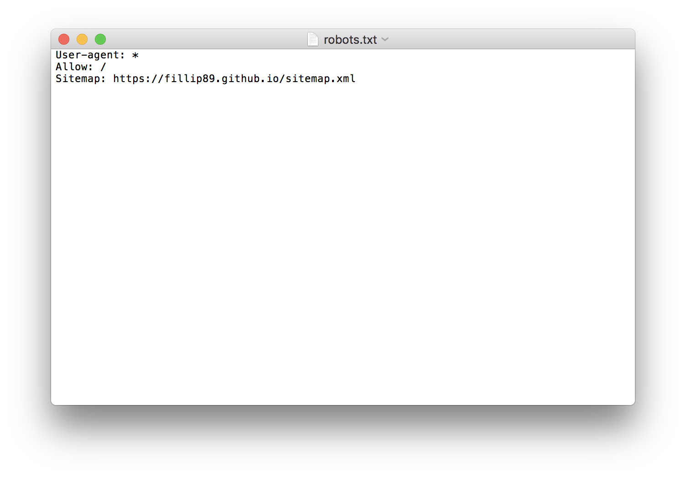
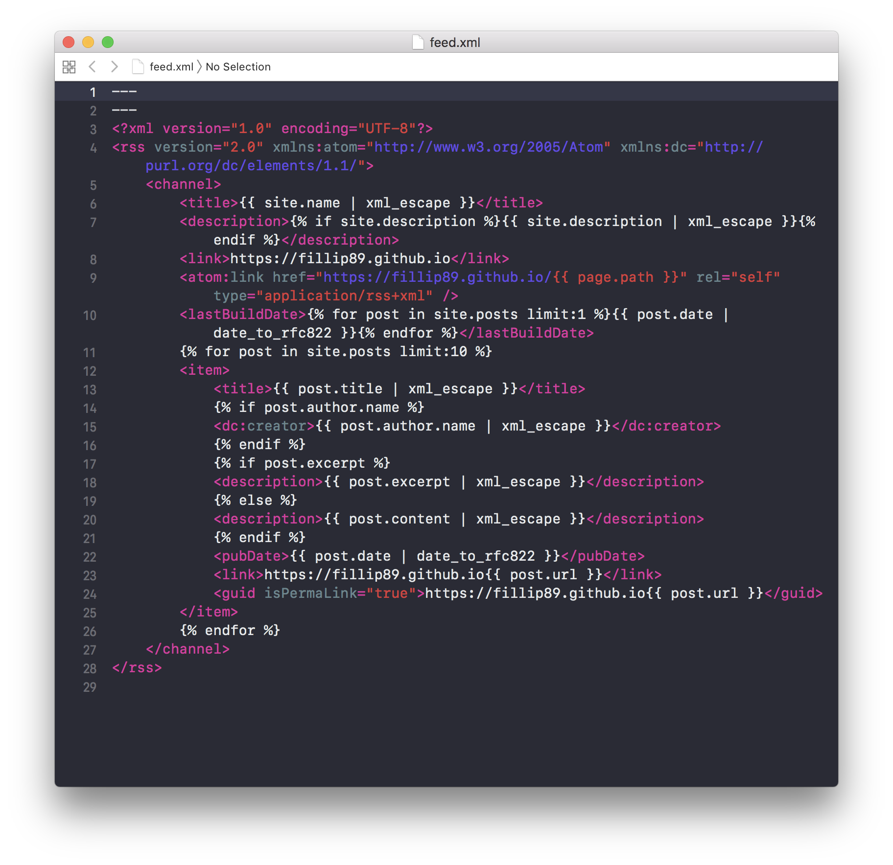
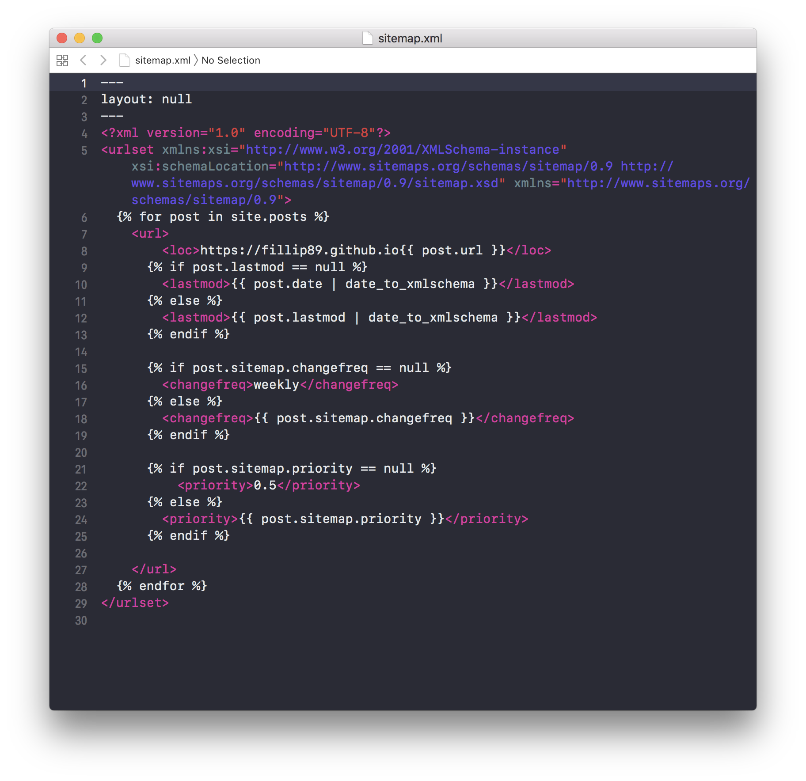

Github에 Jekyll로 RSS feed, sitemap, robots 생성하기
- jekyll
- robots 크롤링로봇
- feed(RSS) 피드
- sitemap 사이트맵
- github upload
내 웹페이지가 naver, google, daum 등 포털사이트에 색인이 돼서 검색결과에 노출이 되려면 feed.xml, sitemap.xml, robots.txt 3가지 file이 필요하다.
‘google blogger’나 ‘티스토리’, ‘워드프레스’, ‘네이버블로그’, ‘다음블로그’ 같은 블로그 솔루션을 제공하는 기업에서는 자동으로 개인 블로그계정 root directory 안에 sitemap.xml과 RSS(feed.xml), robots.txt file을 생성해주지만 ‘git’같은 무료로 이용할 수 있는 버젼관리 시스템에서는 자신의 repository안에 수동으로 파일을 추가해 각각 포털사이트에 RSS피드와 사이트맵, 로봇을 제출해야한다.
(*개인적으로 ‘git’을 사용하는 이유는, 워드프레스는 PlugIn이 강력하지만, 가끔 웹페이지 속도를 저하시킬만큼 JavaScript가 작동해서 웹페이지를 방문하는 이용자 입장에서 불편을 초래하는 것 같다. 그치만 동적인 웹페이지를 생성하는 워드프레스가 훨씬 화려하긴하다ㅎ)
포털사이트에 내 웹사이트(블로그)의 소유인증과 각각의 feed.xml, sitemap.xml, robots.txt를 제출하는 방법은 이후에 따로 포스팅을 하고, 오늘은 root 디렉토리안에 3가지 파일을 생성하는 방법을 포스팅 하려고한다.
3가지파일 모두 install 된 jekyll안에 _config.yml(루트디렉토리위치)파일이 존재하는 위치에 생성해주면 된다.
robots.txt 생성하기
User-agent: *
Allow: /
Sitemap: https://your_site_url/sitemap.xml
_config.yml이 있는 root directory의 폴더에robots.txt파일을 만들고 위의 내용을 복사해넣는다.- your_site_url에 자신의 index.html에 해당하는 웹페이지 주소를 넣으면 됨
- User-agent는 모든 포털로봇이 크롤링 할 수 있도록 *로 설정.
- EX) 
feed.xml 생성하기 (RSS)
1
2
3
4
5
6
7
8
9
10
11
12
13
14
15
16
17
18
19
20
21
22
23
24
25
26
27
28
---
---
<?xml version="1.0" encoding="UTF-8"?>
<rss version="2.0" xmlns:atom="http://www.w3.org/2005/Atom" xmlns:dc="http://purl.org/dc/elements/1.1/">
<channel>
<title>{{ site.name | xml_escape }}</title>
<description>{% if site.description %}{{ site.description | xml_escape }}{% endif %}</description>
<link>https://your_site_url</link>
<atom:link href="https://your_site_url/{{ page.path }}" rel="self" type="application/rss+xml" />
<lastBuildDate>{% for post in site.posts limit:1 %}{{ post.date | date_to_rfc822 }}{% endfor %}</lastBuildDate>
{% for post in site.posts limit:10 %}
<item>
<title>{{ post.title | xml_escape }}</title>
{% if post.author.name %}
<dc:creator>{{ post.author.name | xml_escape }}</dc:creator>
{% endif %}
{% if post.excerpt %}
<description>{{ post.excerpt | xml_escape }}</description>
{% else %}
<description>{{ post.content | xml_escape }}</description>
{% endif %}
<pubDate>{{ post.date | date_to_rfc822 }}</pubDate>
<link>https://your_site_url{{ post.url }}</link>
<guid isPermaLink="true">https://your_site_url{{ post.url }}</guid>
</item>
{% endfor %}
</channel>
</rss>
_config.yml이 있는 root directory의 폴더에feed.xml파일을 만들고 위의 내용을 복사해넣는다.- < link>< /link>사이(line 8), < Atom:link>안에(line 9), < link>< /link>사이(line 23), < guid>< /guid>안에(line 24)
- your_site_url에 자신의 index.html에 해당하는 웹페이지 주소를 넣으면 됨
- EX) 
sitemap.xml 생성하기
1
2
3
4
5
6
7
8
9
10
11
12
13
14
15
16
17
18
19
20
21
22
23
24
25
26
27
28
29
---
layout: null
---
<?xml version="1.0" encoding="UTF-8"?>
<urlset xmlns:xsi="http://www.w3.org/2001/XMLSchema-instance" xsi:schemaLocation="http://www.sitemaps.org/schemas/sitemap/0.9 http://www.sitemaps.org/schemas/sitemap/0.9/sitemap.xsd" xmlns="http://www.sitemaps.org/schemas/sitemap/0.9">
{% for post in site.posts %}
<url>
<loc>https://your_site_url{{ post.url }}</loc>
{% if post.lastmod == null %}
<lastmod>{{ post.date | date_to_xmlschema }}</lastmod>
{% else %}
<lastmod>{{ post.lastmod | date_to_xmlschema }}</lastmod>
{% endif %}
{% if post.sitemap.changefreq == null %}
<changefreq>weekly</changefreq>
{% else %}
<changefreq>{{ post.sitemap.changefreq }}</changefreq>
{% endif %}
{% if post.sitemap.priority == null %}
<priority>0.5</priority>
{% else %}
<priority>{{ post.sitemap.priority }}</priority>
{% endif %}
</url>
{% endfor %}
</urlset>
_config.yml이 있는 root directory의 폴더에sitemap.xml파일을 만들고 위의 내용을 복사해넣는다.- < loc>< /loc>사이(line 8) your_site_url에 자신의 index.html에 해당하는 웹페이지 주소를 넣으면 됨
- EX) 
같은 카테고리의 다른 글
Home| jekyll을 github 저장소에 동기화 시키기. git init, add, commit, push | 2019. 02. 23 |
|---|---|
| 납치태그 meta refresh 리디렉션 소스코드 | 2019. 02. 21 |
| 메타태그 정리 / SEO 검색엔진최적화 / meta tag | 2019. 02. 20 |
| Jekyll Install Mac OS X / 지킬 설치하는 법 for 맥 | 2019. 02. 18 |
| Github에 Jekyll로 RSS feed, sitemap, robots 생성하기 | 2019. 02. 17 |
| 튜너없이 기타 튜닝하는 법 / How to Guitar Tuning / (Sound Track 제공) | 2019. 02. 16 |
| 알고있으면 유용하고 간단한 Mac OS Terminal / 터미널 명령어 | 2019. 02. 15 |